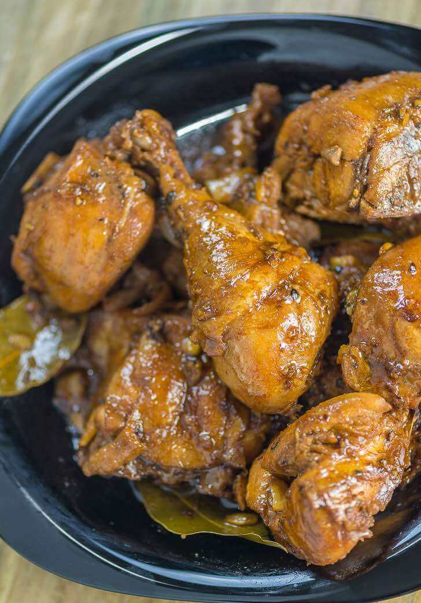

How to cook Chicken Adobo

A dish that is classically and quintessentially Pinoy, chicken adobo is a dish that is beloved by many actoss the country. While there have been several variations of adobo across the years, chicken adobo remains one of the most popular.
What is Chicken Adobo?
A dish and cooking process native to the Philippines, adobo refers to the method of marinating meat, seafood, or vegetables (pretty much anything) in a combination of soy sauce and vinegar. This marinade also includes other herbs and flavorings like garlic, bay leaves, and whole peppercorns.
What really sets adobo apart is the presence of soy sauce in its marinade. While vinegar has a pungent smell aroma and a very distinct sour taste, soy sauce is both the sweeter and saltier side.
How to Cook Chicken Adobo?
Ingredients
- 2 lbs chicken (cut into serving pieces
- 3 pieces dried bay leaves
- 8 tablespoons soy sauce
- 4 tablespoons white vinegar
- 5 cloves crushed garlic
- 1 1/2 cups water
- 3 tablespoons cooking oil
- 1 teaspoon sugar
- 1/4 teaspoon salt
- 1 teaspoon whole peppercorn
Instructions
- Combine chicken, soy sauce, and garlic in a large bowl. Mix well. Marinate the chicken for at least 1 hour.
Note: the longer the time, the better.
- Heat a cooking pot. Pour cooking oil.
- When the oil is hot enough, pan-fry the marinated chicken for 2 minutes per side.
- Pour in the remaining marinade, including garlic. Add water and bring to a boil.
- Add dried bay leaves and whole peppercorn. Simmer for 30 minutes or until the chicken gets tender.
- Add vinegar. Stir and cook for 10 minutes.
- Put in the sugar and salt. Stir and turn the heat off. Serve hot, share, and enjoy!
Return to the top
Return to Main Menu